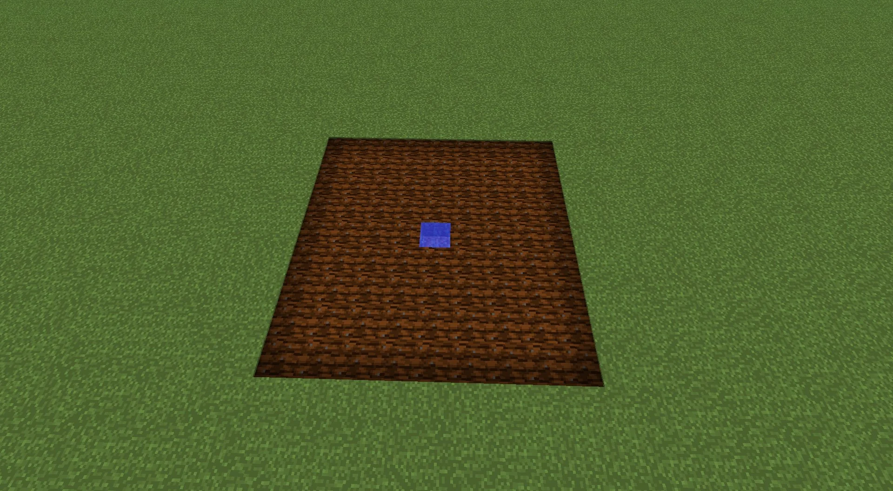

Farming
Crops
Wheat
Beetroot
Carrot
Potato
Melon
Pumpkin
Sugar Cane
Farming Strategies
Water is NECESSARY for farming. Crops grow much faster and farmland doesn't decay. A source of water can water up to 4 blocks in a square like shape, meaning 1 water source is enough to water 80 farmland.
Another item that will help a lot with farming is bone meal. It is crafted from bones or from composting organic items in the composter.
Having bees swarm over your crops is also very nice, since they can polinate the crops and make them grow faster.
Animals
Cow
Chicken
Pig
Sheep
Cows and Sheep are breedable using wheat. Chickens are breedable using any type of seeds. Pigs breed with carrots.
Pigs and Cows are good as a food source, cows also giving you leather is essential for enchanting and other stuff. Chickens are good if you need feathers for arrows or something. And sheep are good if you need lots of wool.